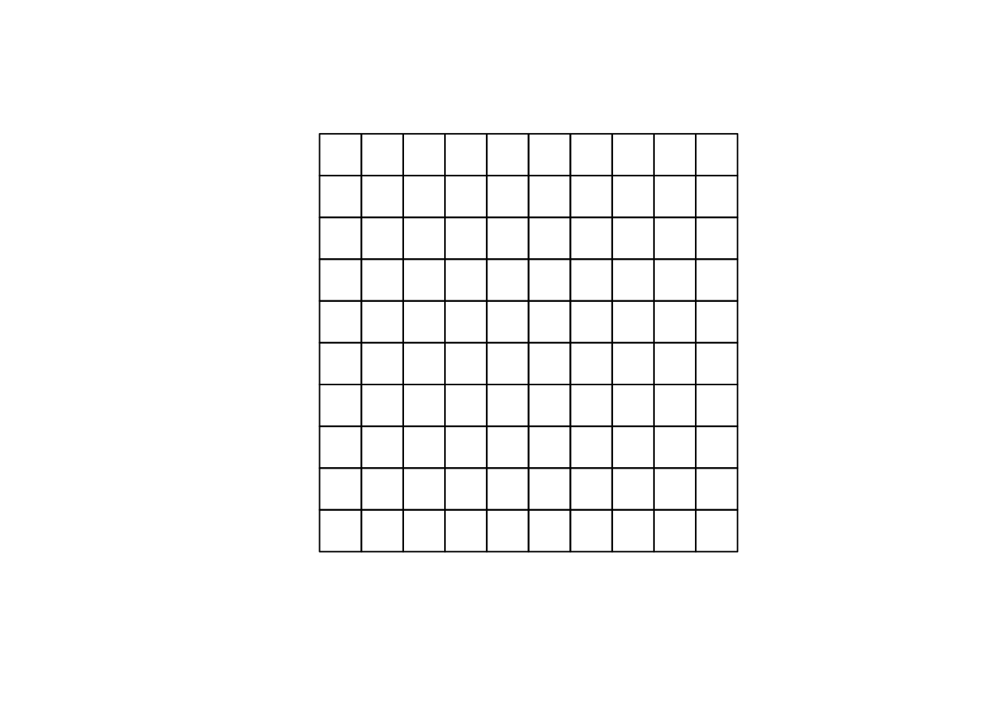
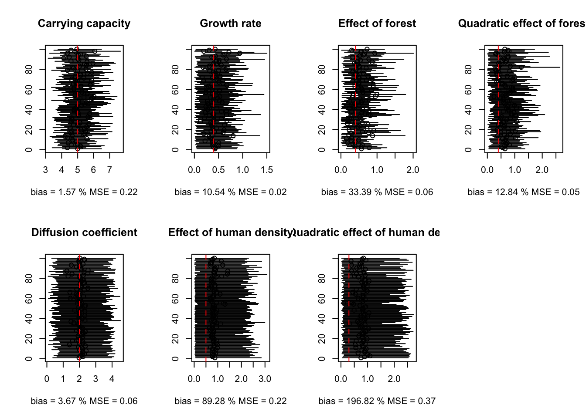

Load packages.
library(raster)
library(sp)
library(rgeos)
library(deSolve)
library(Matrix)
library(maptools)
library(unmarked)
library(R2OpenBUGS)
library(coda)
library(plotrix)Load and format data.
y <- as.matrix(read.table("dat/dony.txt"))
nsite <- ncol(y)
HD_Q <- scan("dat/HD.txt", quiet = T)
forest_Q <- scan("dat/forest.txt",quiet=T)
HD_simuls <- runif(100,min(HD_Q), max(HD_Q))
forest_simuls <- runif(100,min(forest_Q), max(forest_Q))
NsiteOBS <- 100
resolx <- 10
resoly <- 10
# build study area
domaine0 <- rbind(c(-50,-50),c(-50,50),c(50,50),c(50,-50)) # so we can have 28 squares of length 10
r= raster(ncols=resolx,nrows=resoly,ext=extent(min(domaine0[,1]),max(domaine0[,1]),min(domaine0[,2]),max(domaine0[,2])))
domaine <- as(r, 'SpatialPolygons')
# observed sites
coordx = seq(min((domaine0[,1])-(min((domaine0[,1]))/sqrt(NsiteOBS))),
max((domaine0[,1])-(max((domaine0[,1]))/sqrt(NsiteOBS))), length = sqrt(NsiteOBS))
coordy = seq(min((domaine0[,1])-(min((domaine0[,1]))/sqrt(NsiteOBS))),
max((domaine0[,1])-(max((domaine0[,1]))/sqrt(NsiteOBS))), length = sqrt(NsiteOBS))
OBSsites <- expand.grid(coordx,coordy)
dataX <- OBSsites[,1]
dataY <- OBSsites[,2]
# get pixel id and area over which we need to integrate
Robs <- (max((domaine0[,1]))/sqrt(NsiteOBS))
OBS <- NULL
for (i in 1:length(dataX)){
rcenter <-Robs
coords = matrix(c(dataX[i]-rcenter, dataY[i]-rcenter,
dataX[i]-rcenter, dataY[i]+rcenter,
dataX[i]+rcenter, dataY[i]+rcenter,
dataX[i]+rcenter, dataY[i]-rcenter,
dataX[i]-rcenter, dataY[i]-rcenter),
ncol = 2, byrow = TRUE)
P1 = Polygon(coords)
polyOBS <- list()
polyOBS[[1]] <- Polygons(list(P1), ID = 1)
polyOBS <- SpatialPolygons(polyOBS, proj4string= CRS(proj4string(domaine)))
polyIN <- intersect(polyOBS, domaine)
areas <- data.frame(area=sapply(polyIN@polygons, FUN=function(x) {slot(x, 'area')}))
rownames(areas) <- sapply(polyIN@polygons, FUN=function(x) {slot(x, 'ID')})
numPIX <- as.numeric(matrix(unlist(strsplit(rownames(areas),split=" ")),ncol=2,byrow=T)[,2])
OBS <- rbind(OBS,cbind(rep(i,length(numPIX)),numPIX,areas$area))
}
colnames(OBS) <- c("OBSsite","SIMsite","area")plot(domaine)
for (i in 1:length(dataX)){
rcenter <-Robs
coords = matrix(c(dataX[i]-rcenter, dataY[i]-rcenter,
dataX[i]-rcenter, dataY[i]+rcenter,
dataX[i]+rcenter, dataY[i]+rcenter,
dataX[i]+rcenter, dataY[i]-rcenter,
dataX[i]-rcenter, dataY[i]-rcenter),
ncol = 2, byrow = TRUE)
P1 = Polygon(coords)
polyOBS <- list()
polyOBS[[1]] <- Polygons(list(P1), ID = 1)
polyOBS <- SpatialPolygons(polyOBS, proj4string= CRS(proj4string(domaine)))
plot(polyOBS, add = T, pch = 24, border = "blue", lwd = 2)
}
points(dataX,dataY,col=2,pch=16,cex=1.5)
plot(domaine, add = T)OBS## OBSsite SIMsite area
## [1,] 1 91 100
## [2,] 2 92 100
## [3,] 3 93 100
## [4,] 4 94 100
## [5,] 5 95 100
## [6,] 6 96 100
## [7,] 7 97 100
## [8,] 8 98 100
## [9,] 9 99 100
## [10,] 10 100 100
## [11,] 11 81 100
## [12,] 12 82 100
## [13,] 13 83 100
## [14,] 14 84 100
## [15,] 15 85 100
## [16,] 16 86 100
## [17,] 17 87 100
## [18,] 18 88 100
## [19,] 19 89 100
## [20,] 20 90 100
## [21,] 21 71 100
## [22,] 22 72 100
## [23,] 23 73 100
## [24,] 24 74 100
## [25,] 25 75 100
## [26,] 26 76 100
## [27,] 27 77 100
## [28,] 28 78 100
## [29,] 29 79 100
## [30,] 30 80 100
## [31,] 31 61 100
## [32,] 32 62 100
## [33,] 33 63 100
## [34,] 34 64 100
## [35,] 35 65 100
## [36,] 36 66 100
## [37,] 37 67 100
## [38,] 38 68 100
## [39,] 39 69 100
## [40,] 40 70 100
## [41,] 41 51 100
## [42,] 42 52 100
## [43,] 43 53 100
## [44,] 44 54 100
## [45,] 45 55 100
## [46,] 46 56 100
## [47,] 47 57 100
## [48,] 48 58 100
## [49,] 49 59 100
## [50,] 50 60 100
## [51,] 51 41 100
## [52,] 52 42 100
## [53,] 53 43 100
## [54,] 54 44 100
## [55,] 55 45 100
## [56,] 56 46 100
## [57,] 57 47 100
## [58,] 58 48 100
## [59,] 59 49 100
## [60,] 60 50 100
## [61,] 61 31 100
## [62,] 62 32 100
## [63,] 63 33 100
## [64,] 64 34 100
## [65,] 65 35 100
## [66,] 66 36 100
## [67,] 67 37 100
## [68,] 68 38 100
## [69,] 69 39 100
## [70,] 70 40 100
## [71,] 71 21 100
## [72,] 72 22 100
## [73,] 73 23 100
## [74,] 74 24 100
## [75,] 75 25 100
## [76,] 76 26 100
## [77,] 77 27 100
## [78,] 78 28 100
## [79,] 79 29 100
## [80,] 80 30 100
## [81,] 81 11 100
## [82,] 82 12 100
## [83,] 83 13 100
## [84,] 84 14 100
## [85,] 85 15 100
## [86,] 86 16 100
## [87,] 87 17 100
## [88,] 88 18 100
## [89,] 89 19 100
## [90,] 90 20 100
## [91,] 91 1 100
## [92,] 92 2 100
## [93,] 93 3 100
## [94,] 94 4 100
## [95,] 95 5 100
## [96,] 96 6 100
## [97,] 97 7 100
## [98,] 98 8 100
## [99,] 99 9 100
## [100,] 100 10 100Function that simulates data from mecastat model.
sim_mecastat <- function(resol_sim, nyear, carrying_capacity, h, intR, betaR, betaRR, intD, betaD, betaDD){
modLOUP <- function(t,states,parms){
with(as.list(c(parms,states)),{
toto <- paste0("U",1:(C*L))
U <- unlist(mget(toto))
dU <- R * U * (1 - U / K) + (alpha * D2 %*% U) / (h * h)
names(dU) <- c(paste0("dU", seq(1:(C*L))))
res <- dU
list(res)})
}
U_matrix <- matrix(0, ncol = resol_sim, nrow = resol_sim)
C <- ncol(U_matrix)
L <- nrow(U_matrix)
# neighboring matrix
VOIS <- matrix(0,ncol=C*L,nrow=C*L)
for (i in 1:L){
for (j in 1:C){
VOIS.tmp <- matrix(0,ncol=C,nrow=L)
if((i-1)>=1){VOIS.tmp[i-1,j] <- 1}
if((i+1)<=L){VOIS.tmp[i+1,j] <- 1}
if((j-1)>=1){VOIS.tmp[i,j-1] <- 1}
if((j+1)<=C){VOIS.tmp[i,j+1] <- 1}
VOIS[(i-1)*C+j,] <- as.vector(t(VOIS.tmp))
}
}
# diffusion if all sites are equal
M <- diag(-apply(VOIS,1,sum))
for (i in 1:(C*L)){
M[i,VOIS[i,]==1] <- 1
}
D2 <- M
# logistic growth rate
R <- 1 / (1 + exp(-(intR + betaR * forest_simuls + betaRR * forest_simuls^2 )))
R <- as.vector(t(round(R, digits = 2)))
# diffusion
alpha <- 1 / (1 + exp(-(intD + betaD * HD_simuls + betaDD * HD_simuls^2)))
# parameters
parms <- c(K = carrying_capacity, R = R, alpha = alpha, h = h, D2 = D2)
# time
times <- seq(0, nyear-1, by = 1) # nyears * 12 months
# first cell(s) to be occupied for initial values
U_matrix[1,1] <- nb_ind_init
# initial values
iniU <- as.vector(t(U_matrix))
names(iniU) <- c(paste0("U", seq(1:(C*L))))
inits <- iniU
# simulations
simul <- ode(inits, times, modLOUP, parms, method="lsoda")
list(simul=simul,M=M)
}Function to fit mecastat wolf model to simulated data (possibly multiple times).
fit_mecastat <- function(resol_fit, nyear, nsurvey, carrying_capacity, intR, betaR, betaRR, intD, betaD, betaDD, detection, nb_ind_init, tol_ode, h, nchains, nburn, niter, debug){
#-------------------------- simulations ---------------------------- #
# simulate site-specific abundance - latent states (1)
run_sim <- sim_mecastat(resol_sim, nyear, carrying_capacity, h, intR, betaR, betaRR, intD, betaD, betaDD)
simul <- run_sim$simul
M <- run_sim$M
L <- C <- resol_fit # squared study area for simplicity here
# extraction of lambdas
lambda <- simul[,grep("U",dimnames(simul)[[2]])]
# simulate counts - latent process (2)
Ntot <- rpois(length(lambda), lambda) # multipying by 10 the surface of h because
# so far we were working with a rate but to
# get a number of individuals per cell
dim(Ntot) <- dim(lambda)
# apply detection process - observation process
# to get the number of times the species has been detected at a site wihin a year,
r <- detection
ptemp <- matrix(r, nrow = nyear, ncol = L*C)
pobs <- 1-(1-ptemp)^Ntot
nocc <- nb_survey
nsite <- L*C
y <- matrix(0, ncol = ncol(pobs), nrow = nrow(pobs))
for(i in 1:nrow(pobs)){
for(j in 1:ncol(pobs)){
y[i,j] <- rbinom(1, nocc, pobs[i,j]) # apply nocc surveys
}
}
y <- t(y)
#-------------------------- inference ---------------------------- #
init_onesite <- rep(0, nsite)
init_onesite[1] <- nb_ind_init
VOIS <- matrix(0,ncol=C*L,nrow=C*L)
for (i in 1:L){
for (j in 1:C){
VOIS.tmp <- matrix(0,ncol=C,nrow=L)
if((i-1)>=1){VOIS.tmp[i-1,j] <- 1}
if((i+1)<=L){VOIS.tmp[i+1,j] <- 1}
if((j-1)>=1){VOIS.tmp[i,j-1] <- 1}
if((j+1)<=C){VOIS.tmp[i,j+1] <- 1}
VOIS[(i-1)*C+j,] <- as.vector(t(VOIS.tmp))
}
}
M <- diag(-apply(VOIS,1,sum))
for (i in 1:(C*L)){
M[i,VOIS[i,]==1] <- 1
}
# create list of data
x.data <- list(
y=y,
nsite=nsite,
nyear=nyear,
v=nocc,
forest=forest_simuls,
HD=HD_simuls,
DD=M,
h=h,
origin = 0,
tol = tol_ode,
init = init_onesite,
tgrid = seq(0,nyear-1,by=1))
# model
sink("simul_cov_quadra.txt")
cat("
model{
# system of ODEs resolution
solution[1:nyear, 1:nsite] <- ode(init[1:nsite],
tgrid[1:nyear],
D(C[1:nsite], t[nsite]),
origin,
tol)
# abundance model
for (i in 1:nsite){
for (j in 1:nsite){
DDbis[i,j] <- DD[i,j]*alpha1[i]
}
}
for (i in 1:nsite){
# logistic growth + diffusion
D(C[i], t[i]) <- rr[i] * C[i] * (1 - C[i] / KK) + inprod(DDbis[i,],C[]) / (h * h)
logit(rr[i]) <- a.rr + b1.rr * forest[i] + b2.rr * forest[i] * forest[i]
logit(alpha1[i]) <- a.D + b1.D * HD[i] + b2.D * HD[i] * HD[i]
}
for (i in 1:nsite){
for (k in 1:nyear){
N[i,k] ~ dpois(solution[k,i])
}
}
# detection model
for (i in 1:nsite){
for (k in 1:nyear){
p[i,k] <- 1 - pow(1 - r, N[i,k])
y[i,k] ~ dbin(p[i,k],v)
}
}
r ~ dunif(0,1) # detection
KK ~ dnorm(5,1) # carrying capacity
a.rr ~ dnorm(0.5,1)T(0,10)
b1.rr ~ dnorm(0.5,1)T(0,10)
b2.rr ~ dnorm(0.5,1)T(0,10)
a.D ~ dnorm(2,1)T(0,10)
b1.D ~ dnorm(0.5,1)T(0,10)
b2.D ~ dnorm(0.3,1)T(0,10)
}
")
sink()
# specifying the initial MCMC values
inits <- function()list(
N = t(Ntot),
KK = carrying_capacity,
a.rr = intR,
b1.rr = betaR,
b2.rr = betaRR,
a.D = intD,
b1.D = betaD,
b2.D = betaDD,
r = detection)
# setting the parameters to be monitored
params <- c("a.rr","b1.rr","b2.rr","a.D","b1.D","b2.D", "KK","N","r")
# calling OpenBugs
OpenBUGS.pgm="C:/Program Files (x86)/OpenBUGS/OpenBUGS323/OpenBUGS.exe"
ptm <- proc.time()
wolf.sim <- bugs(x.data, inits, model.file = 'simul_cov_quadra.txt',parameters= params,n.chains = nchains, n.burnin = nburn, n.iter = niter, OpenBUGS.pgm = OpenBUGS.pgm, debug= debug_switch, codaPkg=T)
elapsed_time = proc.time() - ptm
elapsed_time
res <- read.bugs(wolf.sim)
list(res=res)
}Simulation study.
resol_sim <- resolx
resol_fit <- resolx
nyear <- 20
carrying_capacity <- 5
intR = 0.4
betaR = 0.4
betaRR = 0.6
intD = 2
betaD = 0.5
betaDD = 0.3
detection <- 0.8
nb_survey <- 4
nb_ind_init <- 1
tol_ode <- 1.0E-3
h <- 10
nchains <- 1
nburn <- 2000
niter <- 10000
debug_switch <- F
# loop on number of simulations
set.seed(13)
H=100
res <- vector("list",H)
estim.median <- matrix(0,nrow=8,ncol=H)
estim.25 <- matrix(0,nrow=8,ncol=H)
estim.975 <- matrix(0,nrow=8,ncol=H)Run simulations.
for(i in 1:H){
# estimate parameters of mecastat wolf model
#res[[i]] <- fit_mecastat(resol_fit, nyear, nsurvey, carrying_capacity, intR, betaR, betaRR, intD, betaD, betaDD, detection, nb_ind_init, tol_ode, h, nchains, nburn, niter, debug_switch)
estim.median[,i] <- c(median(as.mcmc(res[[i]]$res[,'KK'])), median(as.mcmc(res[[i]]$res[,'a.rr'])),median(as.mcmc(res[[i]]$res[,'b1.rr'])),median(as.mcmc(res[[i]]$res[,'b2.rr'])), median(as.mcmc(res[[i]]$res[,'r'])), median(as.mcmc(res[[i]]$res[,"a.D"])), median(as.mcmc(res[[i]]$res[,"b1.D"])), median(as.mcmc(res[[i]]$res[,"b2.D"])))
estim.25[,i]<- c(quantile(as.mcmc(res[[i]]$res[,'KK']),probs=2.5/100),quantile(as.mcmc(res[[i]]$res[,'a.rr']),probs=2.5/100),quantile(as.mcmc(res[[i]]$res[,'b1.rr']),probs=2.5/100),quantile(as.mcmc(res[[i]]$res[,'b2.rr']),probs=2.5/100), quantile(as.mcmc(res[[i]]$res[,'r']),probs=2.5/100),quantile(as.mcmc(res[[i]]$res[,'a.D']),probs=2.5/100), quantile(as.mcmc(res[[i]]$res[,'b1.D']),probs=2.5/100), quantile(as.mcmc(res[[i]]$res[,'b2.D']),probs=2.5/100))
estim.975[,i] <- c(quantile(as.mcmc(res[[i]]$res[,'KK']),probs=97.5/100),quantile(as.mcmc(res[[i]]$res[,'a.rr']),probs=97.5/100),quantile(as.mcmc(res[[i]]$res[,'b1.rr']),probs=97.5/100),quantile(as.mcmc(res[[i]]$res[,'b2.rr']),probs=97.5/100), quantile(as.mcmc(res[[i]]$res[,'r']),probs=97.5/100),quantile(as.mcmc(res[[i]]$res[,'a.D']),probs=97.5/100), quantile(as.mcmc(res[[i]]$res[,'b1.D']),probs=97.5/100), quantile(as.mcmc(res[[i]]$res[,'b2.D']),probs=97.5/100))
print(i)
}
save(res, estim.median, estim.25, estim.975, file = 'resHPHR_covs2_quadra_10000it_prior_inf4.RData')Use this link to download the results (file of size 100Mo approx).
load("dat/resHPHR_covs2_quadra_10000it_prior_inf4.RData")Check out convergence.
par(mfrow = c(4,2))
i=2
plot(as.vector(as.mcmc(res[[1]]$res[,'KK'])), type = "l", ylim = c(0,10), main = "KK")
lines(as.vector(as.mcmc(res[[i]]$res[,'KK'])), col = "green" )
plot(as.vector(as.mcmc(res[[1]]$res[,'a.rr'])), type = "l", ylim = c(0,1), main = "a.rr")
lines(as.vector(as.mcmc(res[[i]]$res[,'a.rr'])), col = "green")
plot(as.vector(as.mcmc(res[[1]]$res[,'b1.rr'])), type = "l", ylim = c(0,2), main = "b1.rr")
lines(as.vector(as.mcmc(res[[i]]$res[,'b1.rr'])), col = "green")
plot(as.vector(as.mcmc(res[[1]]$res[,'b2.rr'])), type = "l", ylim = c(0,2), main = "b2.rr")
lines(as.vector(as.mcmc(res[[i]]$res[,'b2.rr'])), col = "green")
plot(as.vector(as.mcmc(res[[1]]$res[,'r'])), type = "l", ylim = c(0,1), main = "r")
lines(as.vector(as.mcmc(res[[i]]$res[,'r'])), col = "green")
plot(as.vector(as.mcmc(res[[1]]$res[,'a.D'])), type = "l", ylim = c(0,10), main = "a.D")
lines(as.vector(as.mcmc(res[[i]]$res[,'a.D'])), col = "green")
plot(as.vector(as.mcmc(res[[1]]$res[,'b1.D'])), type = "l", ylim = c(0,10), main = "b1.D")
lines(as.vector(as.mcmc(res[[i]]$res[,'b1.D'])), col = "green")
plot(as.vector(as.mcmc(res[[1]]$res[,'b2.D'])), type = "l", ylim = c(0,10), main = "b2.D")
lines(as.vector(as.mcmc(res[[i]]$res[,'b2.D'])), col = "green")Posterior densities.
plot(density(as.mcmc(res[[1]]$res[,'KK'])), type = "l", ylim = c(0,1), main = "KK, prior = dunif(0,25)",xlim = c(-1,10))
lines(density(as.mcmc(res[[2]]$res[,'KK'])), col = "green")
curve(dnorm(x,5,1), col = "blue", add =T)
abline(v = 5, col = "red")
legend("topright", c("chain1", "chain2", "prior"," true value"), col = c("black","green","blue","red"), lwd = 1)
plot(density(as.mcmc(res[[1]]$res[,'a.rr'])), type = "l", ylim = c(0,2), main = "a.rr, prior = dlnorm(1,1)", xlim = c(-1,3))
lines(density(as.mcmc(res[[i]]$res[,'a.rr'])), col = "green")
curve(dnorm(x,0.5,1), col = "blue", add =T)
abline(v = 0.4, col = "red")
legend("topright", c("chain1", "chain2", "prior"," true value"), col = c("black","green","blue","red"), lwd = 1)
plot(density(as.mcmc(res[[1]]$res[,'b1.rr'])), type = "l", ylim = c(0,2), main = "b1.rr, prior = dunif(0,10)", xlim = c(-1,4))
lines(density(as.mcmc(res[[i]]$res[,'b1.rr'])), col = "green")
curve(dnorm(x,0.5,1), col = "blue", add =T)
abline(v = 0.4, col = "red")
legend("topright", c("chain1", "chain2", "prior"," true value"), col = c("black","green","blue","red"), lwd = 1)
plot(density(as.mcmc(res[[1]]$res[,'b2.rr'])), type = "l", ylim = c(0,1.5), main = "b2.rr, prior = dunif(0,10)", xlim = c(-1,2))
lines(density(as.mcmc(res[[i]]$res[,'b2.rr'])), col = "green")
curve(dnorm(x,0.5,1), col = "blue", add =T)
abline(v = 0.6, col = "red")
legend("topright", c("chain1", "chain2", "prior"," true value"), col = c("black","green","blue","red"), lwd = 1)
plot(density(as.mcmc(res[[1]]$res[,'r'])), type = "l", ylim = c(0,12), main = "r, prior = dunif(0,1)", xlim = c(-0.5,1.5))
lines(density(as.mcmc(res[[i]]$res[,'r'])), col = "green")
curve(dunif(x,0,1), col = "blue", add =T)
abline(v = 0.2, col = "red")
legend("topright", c("chain1", "chain2", "prior"," true value"), col = c("black","green","blue","red"), lwd = 1)
plot(density(as.mcmc(res[[1]]$res[,'a.D'])), type = "l", ylim = c(0,1.5), main = "a.D, prior = dlnorm(1,1)")
lines(density(as.mcmc(res[[i]]$res[,'a.D'])), col = "green")
curve(dnorm(x,2,1), col = "blue", add =T)
abline(v = 2, col = "red")
legend("topright", c("chain1", "chain2", "prior"," true value"), col = c("black","green","blue","red"), lwd = 1)
plot(density(as.mcmc(res[[1]]$res[,'b1.D'])), type = "l", ylim = c(0,1), main = "b1.D, prior = dunif(0,10)")
lines(density(as.mcmc(res[[i]]$res[,'b1.D'])), col = "green")
curve(dnorm(x,0.5,1), col = "blue", add =T)
abline(v = 0.5, col = "red")
legend("topright", c("chain1", "chain2", "prior"," true value"), col = c("black","green","blue","red"), lwd = 1)
plot(density(as.mcmc(res[[1]]$res[,'b2.D'])), type = "l", ylim = c(0,1), main = "b2.D, prior = dunif(0,10)", xlim = c(-1,11))
lines(density(as.mcmc(res[[i]]$res[,'b2.D'])), col = "green")
curve(dnorm(x,0.3,1), col = "blue", add =T)
abline(v = 0.3, col = "red")
legend("topright", c("chain1", "chain2", "prior"," true value"), col = c("black","green","blue","red"), lwd = 1)Compute bias and MSE.
H <- 100
Bias <- matrix(0,nrow=1, ncol = 8)
MSE <- matrix(0,nrow=1, ncol = 8)
x <- matrix(0, nrow = H, ncol =8)
diff <- matrix(0, nrow = H, ncol = 8)
param <- c(carrying_capacity, intR, betaR, betaRR, detection, intD, betaD, betaDD)
#K
for(i in 1:H){
x[i,1] <- mean(as.mcmc(res[[i]]$res[,'KK']))
diff[i,1] <- (x[i,1]-param[1])
}
#rr
for(i in 1:H){
x[i,2] <- mean(as.mcmc(res[[i]]$res[,'a.rr']))
diff[i,2] <- (x[i,2]-param[2])
}
#b1.rr
for(i in 1:H){
x[i,3] <- mean(as.mcmc(res[[i]]$res[,'b1.rr']))
diff[i,3] <- (x[i,3]-param[3])
}
#r
for(i in 1:H){
x[i,4] <- mean(as.mcmc(res[[i]]$res[,'b2.rr']))
diff[i,4] <- (x[i,4]-param[4])
}
#r
for(i in 1:H){
x[i,5] <- mean(as.mcmc(res[[i]]$res[,'r']))
diff[i,5] <- (x[i,5]-param[5])
}
#a.D
for(i in 1:H){
x[i,6] <- mean(as.mcmc(res[[i]]$res[,'a.D']))
diff[i,6] <- (x[i,6]-param[6])
}
#b1.D
for(i in 1:H){
x[i,7] <- mean(as.mcmc(res[[i]]$res[,'b1.D']))
diff[i,7] <- (x[i,7]-param[7])
}
#b2.D
for(i in 1:H){
x[i,8] <- mean(as.mcmc(res[[i]]$res[,'b2.D']))
diff[i,8] <- (x[i,8]-param[8])
}
for(i in 1:length(param)) {
Bias[i] <- ((mean(x[,i])-param[i])/param[i])*100
MSE[i] <- mean((diff[,i])^2)
}
Bias## [,1] [,2] [,3] [,4] [,5] [,6] [,7] [,8]
## [1,] 1.579092 10.64683 33.38791 12.84218 -1.025791 3.672924 89.27693 196.8127MSE## [,1] [,2] [,3] [,4] [,5] [,6]
## [1,] 0.2176843 0.02207432 0.06204329 0.04529993 0.001404637 0.06391005
## [,7] [,8]
## [1,] 0.2166324 0.3737464Visualise bias and MSE.
par(mfrow=c(2,4))
plot(estim.median[1,], 1:H, ylab='',xlim=range(c(estim.median[1,],estim.25[1,],estim.975[1,])),main='Carrying capacity', xlab = 'bias = 1.57 % MSE = 0.22')
segments(estim.25[1,], 1:H, estim.975[1,], 1:100)
abline(v=carrying_capacity, lty=2, col='red')
plot(estim.median[2,], 1:H, ylab='',xlim=range(c(estim.median[2,],estim.25[2,],estim.975[2,])),main='Growth rate', xlab = 'bias = 10.54 % MSE = 0.02')
segments(estim.25[2,], 1:H, estim.975[2,], 1:100)
abline(v=intR, lty=2, col='red')
plot(estim.median[3,], 1:H, ylab='',xlim=range(c(estim.median[3,],estim.25[3,],estim.975[3,])),main='Effect of forest', xlab = 'bias = 33.39 % MSE = 0.06')
segments(estim.25[3,], 1:H, estim.975[3,], 1:100)
abline(v=betaR, lty=2, col='red')
plot(estim.median[4,], 1:H, ylab='',xlim=range(c(estim.median[4,],estim.25[4,],estim.975[4,])),main='Quadratic effect of forest', xlab = 'bias = 12.84 % MSE = 0.05')
segments(estim.25[4,], 1:H, estim.975[4,], 1:100)
abline(v=betaR, lty=2, col='red')
plot(estim.median[6,], 1:H, ylab='',xlim=range(c(estim.median[6,],estim.25[6,],estim.975[6,])),main='Diffusion coefficient', xlab = 'bias = 3.67 % MSE = 0.06')
segments(estim.25[6,], 1:H, estim.975[6,], 1:100)
abline(v=intD, lty=2, col='red')
plot(estim.median[7,], 1:H, ylab='',xlim=range(c(estim.median[7,],estim.25[7,],estim.975[7,])),main='Effect of human density', xlab = 'bias = 89.28 % MSE = 0.22')
segments(estim.25[7,], 1:H, estim.975[7,], 1:100)
abline(v=betaD, lty=2, col='red')
plot(estim.median[8,], 1:H, ylab='',xlim=range(c(estim.median[8,],estim.25[8,],estim.975[8,])),main='Quadratic effect of human density', xlab = 'bias = 196.82 % MSE = 0.37')
segments(estim.25[8,], 1:H, estim.975[8,], 1:100)
abline(v=betaDD, lty=2, col='red')